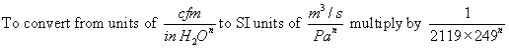

该模型允许您直接输入幂律模型体积流量版本的系数 C 和指数 n。
姓名： 输入要用于识别气流元件的名称。气流元件将保存在当前项目中，并且可以与多个气流路径关联。
流量系数（C）： 由于所使用的转换方法，系数只能以 SI 单位表示。使用以下转换将 IP 单位转换为 SI 单位。
从 cfm/in H 单位转换 2On 转换为 SI 单位 m3/s Pan

流量指数（n）： 流动指数变化范围为 0.5（流动受动态效应主导的大开口）和 1.0（流动受粘性效应主导的狭窄开口）。测量结果通常表明典型渗透开口的流量指数为 0.6 至 0.7。
说明： 用于输入特定气流元件的更详细描述的字段。
图标： 根据特定气流元件选择小或大开口图标。该图标对模拟没有影响。